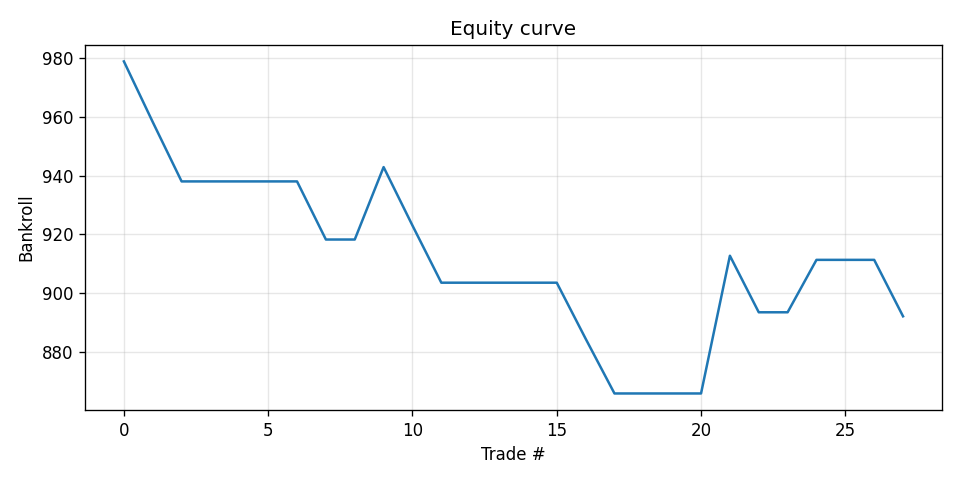
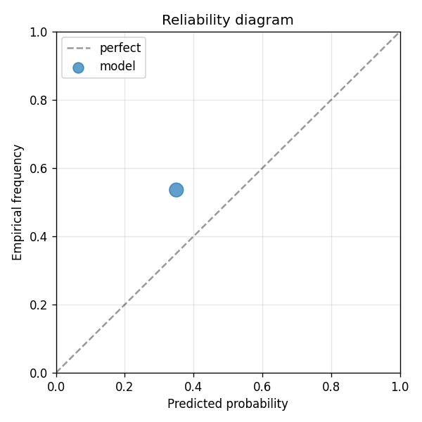

V2: same Football-Data.co.uk features as v1, transformer instead of GBDT, trained on H200 GPU 6. The point is to test whether model capacity alone (without new features) can extract any additional edge. v1 GBDT result: -7.91% net return, Brier -0.16. If transformer matches or beats that, capacity matters; if it lags, features are the bottleneck (Sofascore next).
| metric | value |
|---|---|
| brier_model | 0.2840000554572215 |
| brier_market | 0.2451664420506288 |
| brier_improvement | -0.03883361340659272 |
| accuracy_model | 0.4642857142857143 |
| accuracy_market | 0.4642857142857143 |
| n_events | 28 |
| n_trades | 13 |
| hit_rate | 0.23076923076923078 |
| gross_return | -0.1079198141321881 |
| net_return | -0.1079198141321881 |
| sharpe | -1.3241353940370686 |
| max_drawdown | -0.13419575410826304 |
| label_shuffle_brier_improvement | null |

